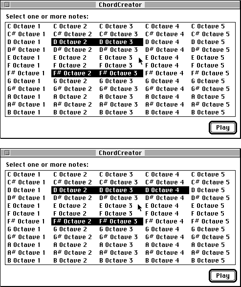

Legacy Document
Important: The information in this document is obsolete and should not be used for new development.
Important: The information in this document is obsolete and should not be used for new development.


Keyboard Navigation of Lists
Although it is easy to use the mouse to select list items, some users prefer to use the keyboard. Keyboard navigation and selection of list items is a particularly useful feature for long lists. Your application should support keyboard navigation of lists in two ways. First, your application should support the use of the arrow keys to move or extend a selection. Second, if your application uses text-only lists (or lists whose items can be identified by text strings), your application should allow the user to select an item simply by typing the text associated with it.The List Manager does not provide any routines to automatically handle
keyboard navigation of lists, but your application can provide code to manage keyboard navigation of lists. "Supporting Keyboard Navigation of Lists" beginning on page 4-36 shows code that handles keyboard navigation.Movement of a Selection With Arrow Keys
When a user presses an arrow key and is not pressing the Shift or Command key, the user is attempting to move the selection one cell. For example, your application should respond to the pressing of the Up Arrow key by selecting the cell that is one cell above the first selected cell and deselecting any other selected cells. If the first selected cell is already in the first row, then your application should respond simply by deselecting all cells other than that first selected cell. Your application should respond to the pressing of the Left Arrow key by moving the selection one cell to the left. Your application should respond to the pressing of the Down Arrow key or the Right Arrow key by selecting the cell that is one cell below or to the right of the last selected cell and deselecting
any other selected cells. If the last selected cell is already in the last row, then
your application should respond simply by deselecting all cells other than that last selected cell.When a user presses an arrow key while pressing the Command key, your application should move the first (or last) selected cell as far as it can move in the appropriate direction. For example, Command-Left Arrow indicates that the first selected cell should be moved as far left as possible (and all other cells should be deselected). Figure 4-13 illustrates how an application responds to the pressing of the Command-Up Arrow keys.
Figure 4-13 Response to pressing the Command-Up Arrow keys
Extension of a Selection With Arrow Keys
A user may press the Shift key when pressing an arrow key to extend the current selection. There are two different algorithms that your application can use to respond to a Shift-arrow key combination.The first potential response is the extend algorithm, in which your application simply finds the first (or last) selected cell, and then selects another cell in the direction of the arrow key. For example, if the user presses Shift-Right Arrow, your application should find the last selected cell and highlight the cell one column to the right of it, unless that cell is already highlighted. If the user presses Command-Shift-Up Arrow, your application should select the cell in the first row that was in the same column as the first selected cell and select all cells in between.
Figure 4-14 shows the effect of the extend algorithm when the user selects items using the Shift key and arrow keys. In this example, after selecting two discontiguous
ranges, the user then presses Shift-Right Arrow, extending the last selected cell by one cell to the right. The user then presses Shift-Left Arrow, extending the selection one cell to the left of the first selected cell.Figure 4-14 Response to user making a discontiguous selection, then pressing Shift-Right Arrow followed by Shift-Left Arrow using the extend algorithm
While the extend algorithm is intuitive and works well for simple lists, a more
powerful algorithm for managing extensions of selections with the arrow keys is the anchor algorithm. This algorithm is far more difficult to implement than the extend algorithm, but allows the user more power than the extend algorithm to extend a list in whatever way is desired, and it works more intuitively both for lists that are likely to contain many discontiguous items and for multicolumn lists.The anchor algorithm works by moving the user's selection relative to an anchor
cell. The application should determine which cell to make the anchor cell by examining the last cell in the rectangular range of cells last selected by the user. If the user has pressed either the Right Arrow or Down Arrow key, the anchor cell should be the first cell in this range; otherwise, it should be the last cell. The application then finds the cell that is on the other end of the rectangular range of cells last selected by the user. It then attempts to move this cell in the direction specified by the arrow key, and it highlights all cells in the rectangle whose corners are the anchor cell and the moving cell. Figure 4-15 illustrates this process.Figure 4-15 Response to Shift-Right Arrow using the anchor algorithm
 The top window of Figure 4-15 shows two rectangular ranges of selected cells. Suppose the application determines that the range of cells last selected by the user is the range containing "D Octave 2" and "D Octave 3." Because the user pressed Shift-Right Arrow, the application designates the first cell in this range to be the anchor cell. It then extends each row of the rectangular range one cell to the right, as shown in the bottom window of Figure 4-15.
The application must remember the anchor cell in case the user clicks another Shift-arrow key combination before making any other changes to the list. If this occurs, the application should keep the same anchor cell. Thus in Figure 4-15, if, after pressing Shift-Right Arrow, the user presses Shift-Left Arrow, then the application keeps the same anchor cell (ordinarily, if the Shift-Left Arrow keys are pressed, the last cell in the range becomes the anchor cell). The rectangular range of cells previously extended one cell to the right thus reverts to its original state. Therefore, if your application supports the anchor algorithm, the user can use Shift-arrow key combinations to extend a rectangular range of cells in any direction around an anchor cell that is determined by the first arrow key pressed.
Type Selection in a Text-Only List
In a text-only list, when the user types the name of an item in a list, your application should respond by scrolling to that item and selecting it. This behavior (allowing a user to type the name of an item in a list to select it) is known as type selection. Rather than requiring the user to type the entire name of a list item, however, your application should continually attempt to determine the best match in the list for the user's typing.In particular, every time the user types a character, your application should add it to a string that keeps track of the characters the user has typed in searching the list. Your application should attempt to find an exact match for this string, or if no exact match exists, your application should select the first item that alphabetically follows the text indicated by the string.
Sometimes the user may start to type the name of one list item and then type the name of another. Your application should support this by automatically resetting the internal string used to keep track of the user's typing after a given amount of time has elapsed without the user's pressing a key. To compute the amount of time after which your application should reset the string, you can use a formula (provided later in this chapter) that depends on the value the user sets for the autokey threshhold in the Keyboard control panel. For users who specify a long delay until keys repeat, your application should use a long time span before it resets the internal string it uses to keep track of the user's typing.